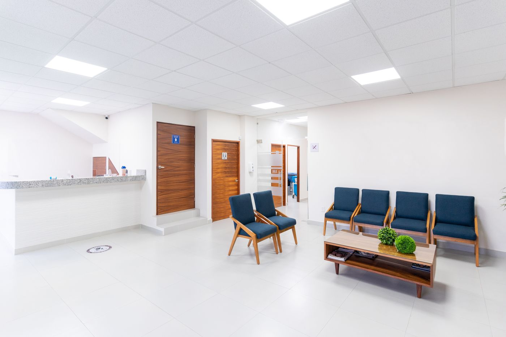

Терапия
Приём врача-терапевта.
первичный приём — 1 700–2 000 ₽по прайсу · актуальность — у администратора
Выберите направление, специалиста и удобное время — заявка придёт администратору в Telegram, он перезвонит и подтвердит запись.

Это концепт. С вашими фото и правками будет ещё лучше
Направления — из меню сайта центра, цены — из его прайс-листа.
Приём врача-терапевта.
Приём врача-гастроэнтеролога.
Консультация по питанию — направление указано на сайте центра.
Взятие анализов в процедурном кабинете — перечень и цены уточняются.
Чистки, пилинги, массаж лица, уходы — разделы на сайте центра.
Массаж и SPA-процедуры — по прайсу центра.
Цены — со страницы «Прайс-лист» сайта центра; там же сказано, что актуальность цен уточняется у администратора.
Направление → специалист → время → телефон. Это рабочий макет: попробуйте.
Если не уверены — выберите «Терапия»: администратор подскажет.
Специалисты — по странице «Специалисты». Можно не выбирать: администратор подберёт по направлению.
Время — по Омску. Вт–сб, пн и вс — выходные. Начало дня на сайте указано по-разному (10:00 и 11:00), поэтому слоты — с 11:00.
Так это будет работать: администратор получает заявку с направлением, специалистом и временем и перезванивает, чтобы подтвердить запись. Сейчас это макет — ничего не отправлено и не сохранено.
Запишитесь сразу к своему специалисту.
Врач-гастроэнтеролог, врач-трансфузиолог.
Врач-терапевт, врач-гастроэнтеролог.
Врач-терапевт.
Врач-терапевт, врач-трансфузиолог.
Врач-терапевт, специалист по медицинскому массажу.
Нутрициолог.
Специалисты и должности — со страницы «Специалисты» сайта центра. Фото специалистов — уточняются.
Только то, что опубликовано центром.
Имеются противопоказания, необходима консультация специалиста. Объём и стоимость услуг называет специалист на приёме.
В заявке только направление, время и телефон — без жалоб и сведений о здоровье.
На сайте опубликованы правила записи на первичный приём, договор платных услуг и порядок получения документов.
Только то, что опубликовано на сайте центра.
По прайсу на сайте: первичный стандартный приём терапевта — 1 700–2 000 ₽, гастроэнтеролога — 1 900–2 200 ₽. Актуальность цен — у администратора.
Вторник–суббота; понедельник и воскресенье — выходные. В подвале сайта указано 10:00–20:00, на странице «Контакты» — 11:00–20:00. Время начала уточняется.
Сейчас на сайте — телефон и форма обратного звонка. Здесь показано, как может выглядеть запись на конкретное время.
Омск, ул. Герцена, 12. Этаж и вход — уточняются.
Омск, ул. Герцена, 12. Вт–сб, пн и вс — выходные.
Вт–сб · с 10:00 или 11:00 до 20:00 — уточняется
На сайте указан ещё номер +7 913 655-71-55 — какой основной для записи, уточняется. Имеются противопоказания, необходима консультация специалиста.